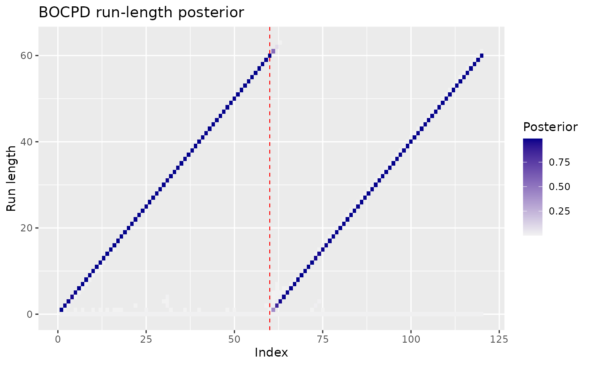

Run-length posterior heatmap for Bayesian online results
Source:R/posterior-plots.R
ggcpt_runlength.RdDraws the signature BOCPD graphic: the posterior distribution of the run
length (time since the last changepoint) at every observation, as a
heatmap, with the series overlaid on top. Works with results from
bocpd_wrapper().
Arguments
- x
A
ggcptobject produced bybocpd_wrapper().- prob_floor
Posterior probabilities below this value are not drawn (keeps the heatmap legible). Defaults to
1e-3.
Examples
res <- bocpd_wrapper(c(rnorm(60), rnorm(60, 4)))
ggcpt_runlength(res)
